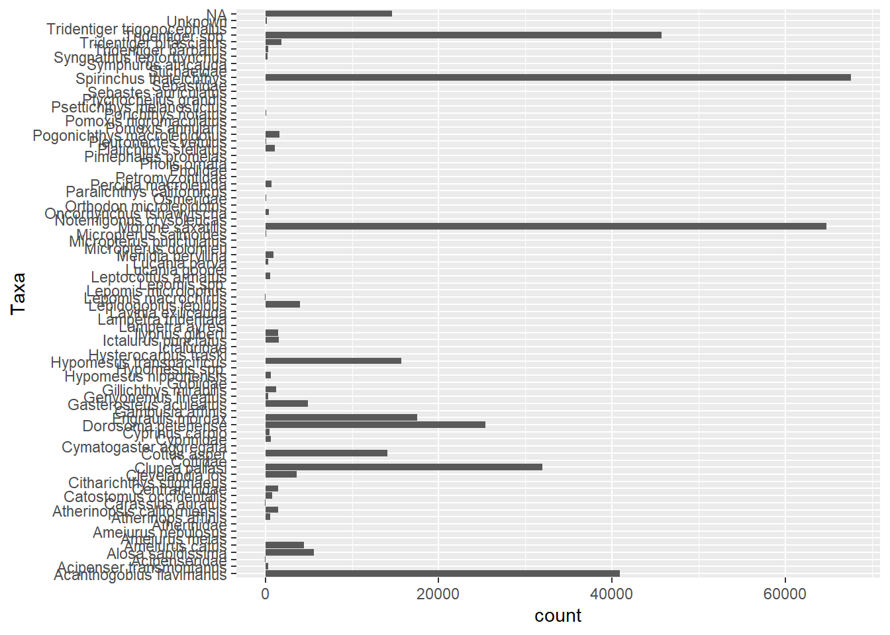
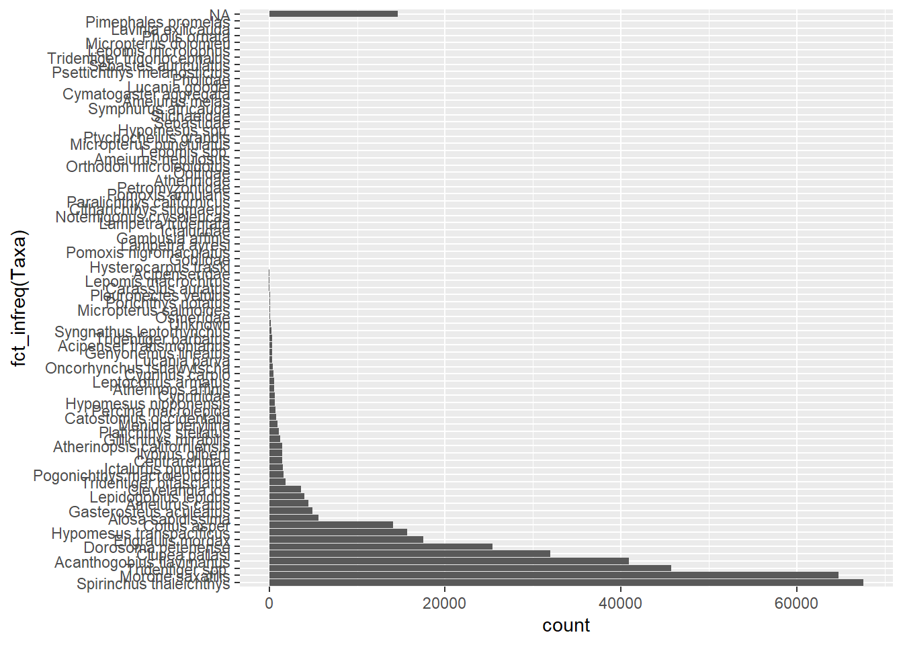
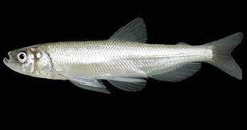
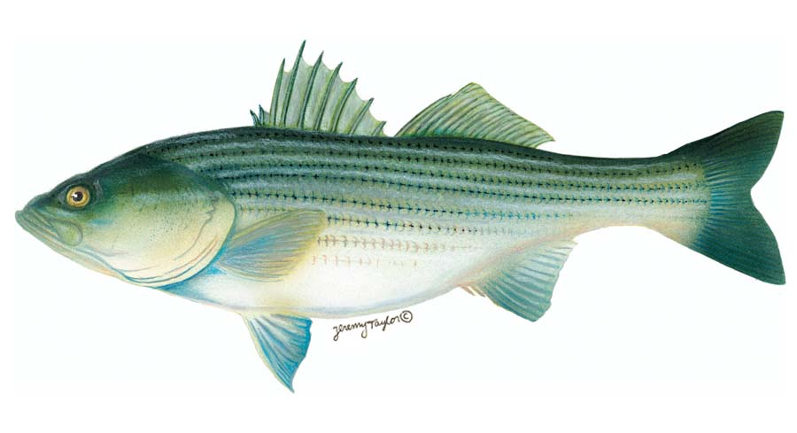
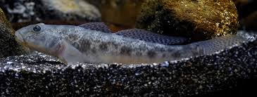
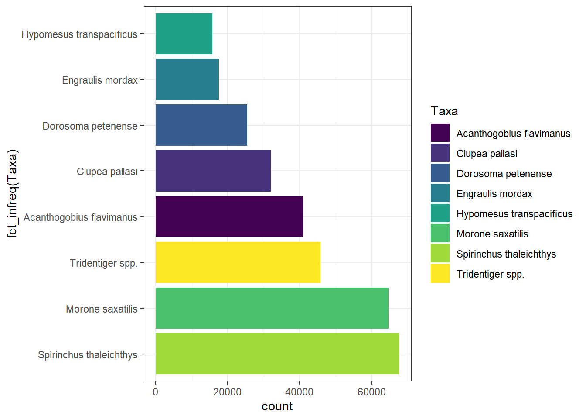
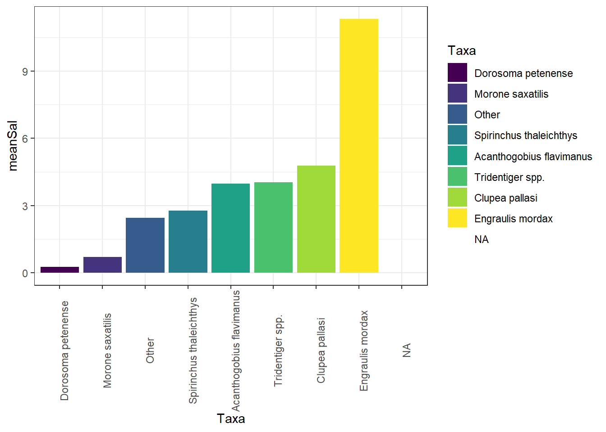
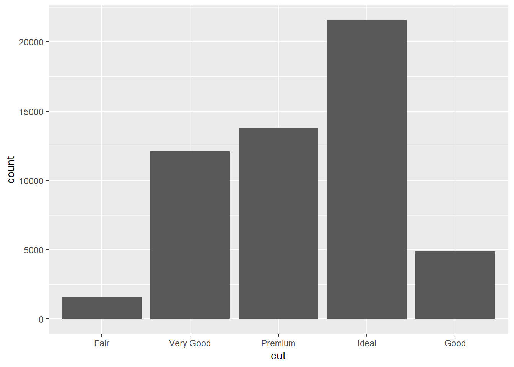
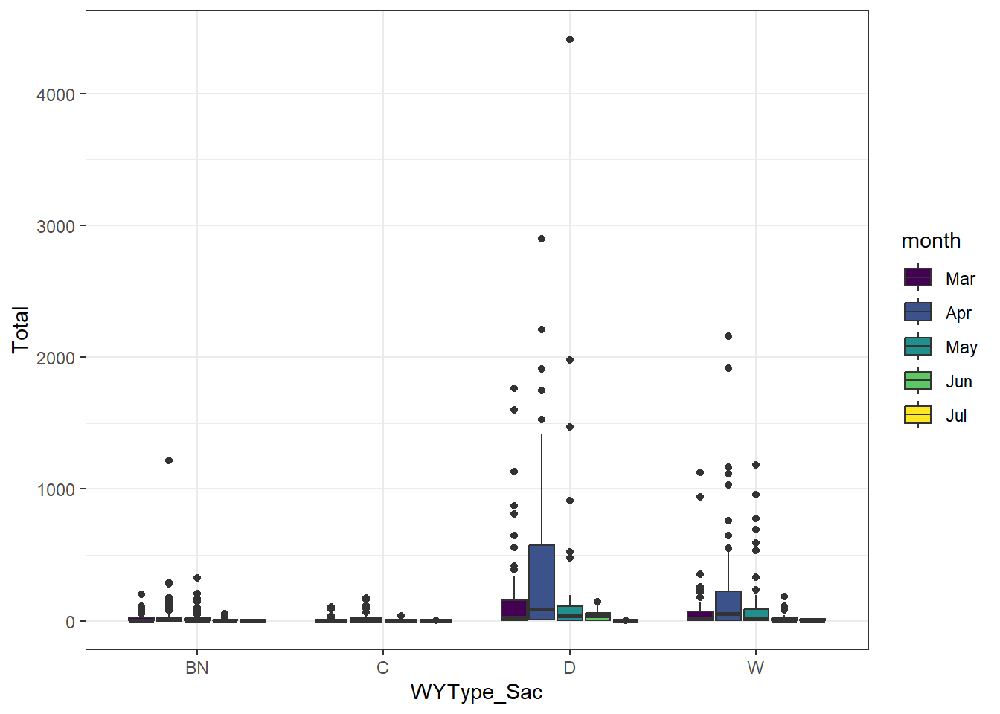

library(forcats)
library(ggplot2)
library(dplyr)
library(tidyr)
library(lubridate)
library(readr)
library(EDIutils)forcats-tutorial
Background
The goal of the forcats package is to provide a suite of useful tools that solve common problems with factors. Factors are useful when you have categorical data, variables that have a fixed and known set of values, and when you want to display character vectors in non-alphabetical order.
1. Read in data from 20-mm survey
wytype <- read_csv("WYType.csv")
pkg <- read_data_entity_names(packageId = "edi.535.5")
raw <- read_data_entity(packageId = "edi.535.5", entityId = pkg$entityId[1])
fishies0 <- read_csv(raw)
glimpse(fishies0)Rows: 380,797
Columns: 30
$ Source <chr> "20mm", "20mm", "20mm", "20mm", "20mm", "20mm", "20mm",…
$ Station <dbl> 809, 809, 809, 809, 901, 901, 901, 901, 902, 902, 902, …
$ StartLatitude <dbl> NA, NA, NA, NA, NA, NA, NA, NA, NA, NA, NA, NA, NA, NA,…
$ StartLongitude <dbl> NA, NA, NA, NA, NA, NA, NA, NA, NA, NA, NA, NA, NA, NA,…
$ EndLatitude <dbl> NA, NA, NA, NA, NA, NA, NA, NA, NA, NA, NA, NA, NA, NA,…
$ EndLongitude <dbl> NA, NA, NA, NA, NA, NA, NA, NA, NA, NA, NA, NA, NA, NA,…
$ Date <date> 1995-04-24, 1995-04-24, 1995-04-24, 1995-04-24, 1995-0…
$ Datetime <dttm> 1995-04-24 07:40:00, 1995-04-24 07:55:00, 1995-04-24 0…
$ Survey <dbl> 1, 1, 1, 1, 1, 1, 1, 1, 1, 1, 1, 1, 1, 1, 1, 1, 1, 1, 1…
$ TowNum <dbl> 2, 3, 1, 1, 1, 1, 2, 3, 1, 1, 2, 3, 1, 1, 1, 2, 3, 3, 3…
$ Depth <dbl> 10.0584, 10.0584, 10.0584, 10.0584, 2.4384, 2.4384, 2.4…
$ SampleID <chr> "20mm 1995-04-24 809 2", "20mm 1995-04-24 809 3", "20mm…
$ Method <chr> "20mm_Net", "20mm_Net", "20mm_Net", "Mesozooplankton_CB…
$ Tide <chr> "Ebb", "Ebb", "Ebb", "Ebb", "Ebb", "Ebb", "Ebb", "Ebb",…
$ Sal_surf <dbl> 0.07925998, 0.07925998, 0.07925998, 0.07925998, 0.09365…
$ Sal_bot <dbl> 0.07590543, 0.07590543, 0.07590543, 0.07590543, 0.09749…
$ Temp_surf <dbl> 15.0, 15.0, 15.0, 15.0, 15.9, 15.9, 15.9, 15.9, 16.3, 1…
$ Secchi <dbl> 0.72, 0.72, 0.72, 0.72, 1.44, 1.44, 1.44, 1.44, 0.70, 0…
$ NTU <dbl> NA, NA, NA, NA, NA, NA, NA, NA, NA, NA, NA, NA, NA, NA,…
$ FNU <dbl> NA, NA, NA, NA, NA, NA, NA, NA, NA, NA, NA, NA, NA, NA,…
$ Tow_volume <dbl> 937.8079, 905.5183, 998.9693, 976.2697, 872.7058, 838.5…
$ Cable_length <dbl> 60.96, 60.96, 60.96, 60.96, 15.24, 15.24, 15.24, 15.24,…
$ Tow_duration <dbl> 10, 10, 10, 10, 10, 10, 10, 10, 10, 10, 10, 10, 10, 10,…
$ Taxa <chr> "Catostomus occidentalis", "Tridentiger bifasciatus", N…
$ Length <dbl> 20, 63, NA, NA, NA, NA, NA, NA, NA, NA, NA, NA, 51, 165…
$ Count <dbl> 1, 1, 0, 0, 0, 0, 0, 0, 0, 0, 0, 0, 1, 1, 0, 1, 1, 1, 1…
$ Length_NA_flag <chr> NA, NA, "No fish caught", "No fish caught", "No fish ca…
$ Notes_survey <chr> NA, NA, NA, NA, NA, NA, NA, NA, NA, NA, NA, NA, NA, NA,…
$ Notes_station <chr> NA, NA, NA, NA, NA, NA, NA, NA, "Lost CB meter. Used a…
$ Notes_gear <chr> NA, NA, NA, NA, NA, NA, NA, NA, NA, NA, NA, NA, NA, NA,…fishies <- fishies0 %>% select(Date, Station, Tide, Temp_surf, Sal_surf, Secchi, Taxa, Count) %>%
mutate(month = month(Date,label = TRUE),
year = year(Date)) %>%
group_by(year, month, Station, Tide, Taxa) %>%
summarize(
meanTemp = mean(Temp_surf, na.rm = TRUE),
meanSal = mean(Sal_surf,na.rm = TRUE),
meanSecchi = mean(Secchi,na.rm = TRUE),
Total = sum(Count)) %>%
ungroup() %>%
filter(Taxa!= "Unknown")2. Functions
Here are the fish data
ggplot(fishies0, aes(y = Taxa)) +
geom_bar()
Sort by most common
ggplot(fishies0, aes(y = fct_infreq(Taxa))) +
geom_bar()



sorted <- fishies0 %>%
mutate(Taxa = fct_infreq(Taxa))
levels(sorted$Taxa) [1] "Spirinchus thaleichthys" "Morone saxatilis"
[3] "Tridentiger spp." "Acanthogobius flavimanus"
[5] "Clupea pallasi" "Dorosoma petenense"
[7] "Engraulis mordax" "Hypomesus transpacificus"
[9] "Cottus asper" "Alosa sapidissima"
[11] "Gasterosteus aculeatus" "Ameiurus catus"
[13] "Lepidogobius lepidus" "Clevelandia ios"
[15] "Tridentiger bifasciatus" "Pogonichthys macrolepidotus"
[17] "Ictalurus punctatus" "Centrarchidae"
[19] "Ilypnus gilberti" "Atherinopsis californiensis"
[21] "Gillichthys mirabilis" "Platichthys stellatus"
[23] "Menidia beryllina" "Catostomus occidentalis"
[25] "Percina macrolepida" "Hypomesus nipponensis"
[27] "Cyprinidae" "Atherinops affinis"
[29] "Leptocottus armatus" "Cyprinus carpio"
[31] "Oncorhynchus tshawytscha" "Lucania parva"
[33] "Genyonemus lineatus" "Acipenser transmontanus"
[35] "Tridentiger barbatus" "Syngnathus leptorhynchus"
[37] "Unknown" "Osmeridae"
[39] "Micropterus salmoides" "Porichthys notatus"
[41] "Pleuronectes vetulus" "Carassius auratus"
[43] "Lepomis macrochirus" "Acipenseridae"
[45] "Hysterocarpus traski" "Gobiidae"
[47] "Pomoxis nigromaculatus" "Lampetra ayresi"
[49] "Gambusia affinis" "Ictaluridae"
[51] "Lampetra tridentata" "Notemigonus crysoleucas"
[53] "Citharichthys stigmaeus" "Paralichthys californicus"
[55] "Pomoxis annularis" "Petromyzontidae"
[57] "Atherinidae" "Cottidae"
[59] "Orthodon microlepidotus" "Ameiurus nebulosus"
[61] "Lepomis spp." "Micropterus punctulatus"
[63] "Ptychocheilus grandis" "Hypomesus spp."
[65] "Sebastidae" "Stichaeidae"
[67] "Symphurus atricauda" "Ameiurus melas"
[69] "Cymatogaster aggregata" "Lucania goodei"
[71] "Pholidae" "Psettichthys melanostictus"
[73] "Sebastes auriculatus" "Tridentiger trigonocephalus"
[75] "Lepomis microlophus" "Micropterus dolomieu"
[77] "Pholis ornata" "Lavinia exilicauda"
[79] "Pimephales promelas" abundant <- levels(sorted$Taxa)[1:8]
common <- fishies0 %>% filter(Taxa %in% abundant)ggplot(common, aes(y = fct_infreq(Taxa))) +
geom_bar(aes(fill = Taxa)) +
viridis::scale_fill_viridis(discrete = TRUE) +
theme_bw()
Lump less common groups
fishies0 %>%
mutate(Taxa = fct_lump(Taxa, n = 8)) %>%
count(Taxa, sort = TRUE)# A tibble: 10 × 2
Taxa n
<fct> <int>
1 Spirinchus thaleichthys 67559
2 Morone saxatilis 64769
3 Other 56711
4 Tridentiger spp. 45729
5 Acanthogobius flavimanus 40875
6 Clupea pallasi 31957
7 Dorosoma petenense 25423
8 Engraulis mordax 17505
9 Hypomesus transpacificus 15664
10 <NA> 14605fishies0 %>%
mutate(Taxa = fct_lump(Taxa, prop = 0.05)) %>%
count(Taxa, sort = TRUE)# A tibble: 8 × 2
Taxa n
<fct> <int>
1 Other 89880
2 Spirinchus thaleichthys 67559
3 Morone saxatilis 64769
4 Tridentiger spp. 45729
5 Acanthogobius flavimanus 40875
6 Clupea pallasi 31957
7 Dorosoma petenense 25423
8 <NA> 14605fishies0 %>%
mutate(Taxa = fct_lump(Taxa, prop = 0.05, other_level = "uncommon_fishies")) %>%
count(Taxa, sort = TRUE)# A tibble: 8 × 2
Taxa n
<fct> <int>
1 uncommon_fishies 89880
2 Spirinchus thaleichthys 67559
3 Morone saxatilis 64769
4 Tridentiger spp. 45729
5 Acanthogobius flavimanus 40875
6 Clupea pallasi 31957
7 Dorosoma petenense 25423
8 <NA> 14605# Create a factor with six levels
fruit <- factor(c("apple", "banana", "orange", "grape", "peach", "plum"))
# Collapse the last three levels into a single level called "other"
fruit2 <- fct_collapse(fruit, other = c("grape", "peach", "plum"))
table(fruit)fruit
apple banana grape orange peach plum
1 1 1 1 1 1 table(fruit2)fruit2
apple banana other orange
1 1 3 1 Ordering by another variable
sal_taxa <- fishies0 %>%
mutate(Taxa = fct_lump(Taxa, n = 7)) %>%
group_by(Taxa) %>%
summarize(meanSal = mean(Sal_surf, na.rm = TRUE),
meanTemp = mean(Temp_surf, na.rm = TRUE)) %>%
ungroup()
sal_taxa %>%
mutate(Taxa = fct_reorder(Taxa, meanSal)) %>%
ggplot(aes(x = Taxa, meanSal)) +
geom_col(aes(fill = Taxa)) +
viridis::scale_fill_viridis(discrete = TRUE) +
theme_bw() +
theme(axis.text.x = element_text(angle = 90))
Manual releveling of factors
library(ggplot2)
# Create a bar plot of diamond cut
ggplot(diamonds, aes(x = cut)) +
geom_bar()
# Reorder the levels of the cut variable
diamonds$cut <- fct_relevel(diamonds$cut, "Fair", "Good", "Very Good", "Premium", "Ideal")
diamonds$cut <- fct_relevel(diamonds$cut, "Good", after = 2)
diamonds$cut <- fct_relevel(diamonds$cut, "Good", after = Inf)
levels(diamonds$cut)[1] "Fair" "Very Good" "Premium" "Ideal" "Good" # Create a new bar plot with the reordered levels
ggplot(diamonds, aes(x = cut)) +
geom_bar()
Shifting by one
library(forcats)
levels(fishies$month) [1] "Jan" "Feb" "Mar" "Apr" "May" "Jun" "Jul" "Aug" "Sep" "Oct" "Nov" "Dec"# Use fct_shift to shift the levels by 2 places
fishies$shifted_month <- fct_shift(fishies$month, n = 2)
levels(fishies$shifted_month) [1] "Mar" "Apr" "May" "Jun" "Jul" "Aug" "Sep" "Oct" "Nov" "Dec" "Jan" "Feb"Adding additional values to the levels
fish_wy <- fishies %>%
filter(Taxa == "Spirinchus thaleichthys") %>%
mutate(WY = year) %>%
left_join(wytype) %>%
filter(WY >2010 & WY < 2020)Joining with `by = join_by(WY)`ggplot(fish_wy) + geom_boxplot(aes(WYType_Sac, Total, fill = month))+theme_bw()
fish_f1 <- fish_wy %>%
mutate(WYType_Sac = as.factor(WYType_Sac))
levels(fish_f1$WYType_Sac)[1] "BN" "C" "D" "W" fish_f2 <- fish_wy %>%
mutate(WYType_Sac = as.factor(WYType_Sac)) %>%
mutate(WYType_Sac = fct_relevel(WYType_Sac, "C", "D", "BN", "W"))
levels(fish_f2$WYType_Sac)[1] "C" "D" "BN" "W" fish_f3 <- fish_wy %>%
mutate(WYType_Sac = as.factor(WYType_Sac)) %>%
mutate(WYType_Sac = fct_relevel(WYType_Sac, "C", "D", "BN", "W")) %>%
mutate(WYType_Sac = fct_expand(WYType_Sac, "AN", after = 3))
levels(fish_f3$WYType_Sac)[1] "C" "D" "BN" "AN" "W" Other functions
- fct_inorder(): in order of appearance
- fct_inseq(): in order of numeric order
- fct_rev(): reverse factor level
- fct_unify(): make levels uniform between different columns, lists
- fct_cross(): combine levels from two or more factors to create new factor
- fct_c(): concatenate factors